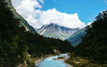
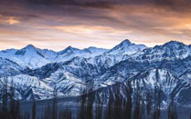
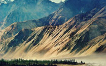
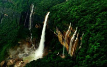
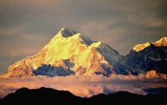
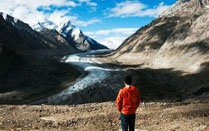
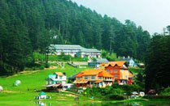
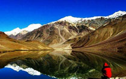
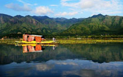

The Nature Paradise
For all the nature lovers, the best of all travel tips we’d like to give is, go to India and the journey will guide you right into the lap of nature. From north to south and east to west, India is blessed with natural beauty in abundance. Just travel, explore and repeat.
Beauty in Nature
-
 Yumthang Valley, Sikkim – The Bowl Of Flowers
-
 Stok Kangri, Ladakh – The Paradise For Trekkers
-
 Nubra Valley, Ladakh – The Undiscovered Realm Of Nature
-
 Nohkalikai Falls, Cherrapunji – Cascading Water That Changes Colour
-
 Nanda Devi, Uttarakhand – The Towering Marvel Of Nature
-
 Drang Drung Glacier, Near Kargil – A Heaven For Travelers
-
Andaman And Nicobar Islands – The Undisturbed Honeymooners’ Getaway
-
 Khajjiar, Himachal Pradesh – India’s Version Of Switzerland
-
 Chandertal Lake, Himachal Pradesh – The Crescent Shaped Fantasy For Trekkers
-
 Dal Lake – The Epitome Of Perfection And Serenity
40 Most Beautiful Places In India
So here is a list of some of the most beautiful places in India that you must keep handy when planning a vacation in the country.
- Yumthang Valley, Sikkim – The Bowl Of Flowers
- Stok Kangri, Ladakh – The Paradise For Trekkers
- Nubra Valley, Ladakh – The Undiscovered Realm Of Nature
- Nohkalikai Falls, Cherrapunji – Cascading Water That Changes Colour
- Nanda Devi, Uttarakhand – The Towering Marvel Of Nature
- Drang Drung Glacier, Near Kargil – A Heaven For Travelers
- Andaman And Nicobar Islands – The Undisturbed Honeymooners’ Getaway
- Khajjiar, Himachal Pradesh – India’s Version Of Switzerland
- Chandertal Lake, Himachal Pradesh – The Crescent Shaped Fantasy For Trekkers
- Dal Lake – The Epitome Of Perfection And Serenity
- Valley Of Flowers, Uttaranchal – The Sea Of Flora And Refreshing Aromas
- Pangong Tso, Leh Ladakh – The Mesmerising Vistas Of Blues And Browns
- Khatling Glacier – The Snowy Delight For Trekkers & Photographers
- Ghats, Varanasi – The Realm Of Spirituality And Divinity
- Sand Dunes, Jaisalmer – The Colours Of Royalty
- Lake Pichola, Udaipur – The Lake City Of India
- Gurudongmar Lake, Sikkim – Beatific Waters Of North-East
- Dudhsagar Falls, Goa – The Ivory Cascades
- Agatti Island, Lakshadweep – The Beautiful Underwater Atolls
- Munnar, Kerala – The Hill Town Of God’s Own Country
- Manali – The Adventurous Retreat In Himalayas
- Matheran Hill, Raigad – Plethora Of Green, Serene Beauty
- Zanskar Valley, Ladakh – A Mystic Dale
- Tawang, Arunachal Pradesh – The Calm Monasteries
- Munsiyari, Uttrakhand – Miscellany Of Verdant Slopes
- Chilka Lake, Odisha – The Unexplored, Hidden Gem Of The East
- Agumbe, Karnataka – A Dashing Source Of Fresh Air & Vistas
- Rann Of Kutch – Salt Desert Of The West
- Loktak Lake, Manipur – A Source Of Power Generation
- Caves, Meghalaya – Pothole Of The East
- Palolem Beach, Goa – Nature And Nightlife
- Nilgiri Hills, Tamil Nadu – A Wonder Of Western Ghats
- Bhedaghat, Madhya Pradesh – Tranquility And Sacredness
- Lonar Crater, Maharashtra – A Lake With Awe-Inspiring History
- Gulmarg, Jammu And Kashmir – For A Heavenly Travel Experience
- Gandikota Canyon, Andhra Pradesh – Enjoy Learning About The Vast History
- Kudremukh Grassland, Karnataka – Nature And Heritage
- Kaas Plateau, Maharashtra – A Flowery Experience
- Sundarbans Mangrove, West Bengal – Lush Greenery And More Natural Wonders
- Ziro Hill Station, Arunachal Pradesh – A Famous Census Town